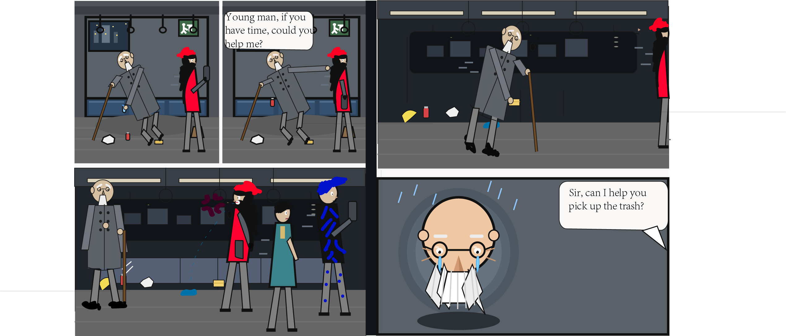

"The elderly man takes the initiative to pick up trash that others have thrown on the ground. A young man with red hair walks past while playing on his phone. The old man is not in good health and cannot bend over for long periods of time. He tries to ask the red-haired young man for help, but the young man refuses him and even spits on the ground. The elderly man feels very sad and does not understand why everyone else is like this. At that moment, a voice suddenly sounds in his ear."
Credits: images created by myself.